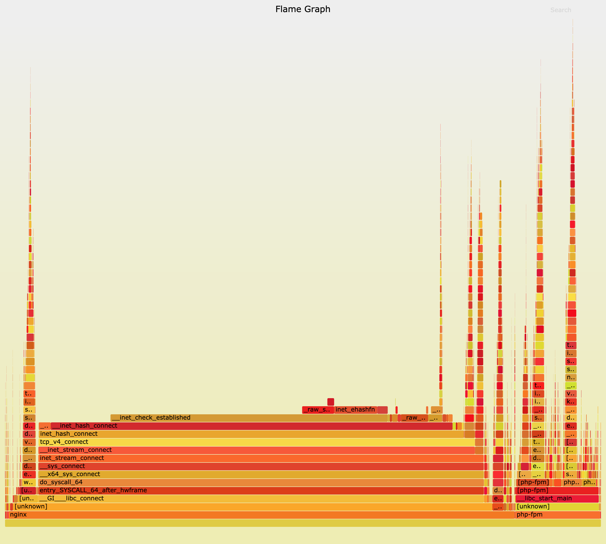

- 使用 perf 配合火焰图寻找热点函数，是一个比较通用的性能定位方法，在很多场景中都可以使用。
- 如果这仍满足不了你的要求，那么在新版的内核中，eBPF 和 BCC 是最灵活的动态追踪方法。
- 而在旧版本内核，特别是在 RHEL 系统中，由于 eBPF 支持受限，SystemTap 和 ftrace 往往是更好的选择。
连接数优化
要查看 TCP 连接数的汇总情况，首选工具自然是 ss 命令。
工作进程优化
执行下面的 docker 命令，查询 Nginx 容器日志就知道了：
$ docker logs nginx --tail 3
192.168.0.2 - - [15/Mar/2019:2243:27 +0000] "GET / HTTP/1.1" 499 0 "-" "-" "-"
192.168.0.2 - - [15/Mar/2019:22:43:27 +0000] "GET / HTTP/1.1" 499 0 "-" "-" "-"
192.168.0.2 - - [15/Mar/2019:22:43:27 +0000] "GET / HTTP/1.1" 499 0 "-" "-" "-"
套接字优化
然后回到终端一中，观察有没有发生套接字的丢包现象：
# 只关注套接字统计
$ netstat -s | grep socket
73 resets received for embryonic SYN_RECV sockets
308582 TCP sockets finished time wait in fast timer
8 delayed acks further delayed because of locked socket
290566 times the listen queue of a socket overflowed
290566 SYNs to LISTEN sockets dropped
# 稍等一会，再次运行
$ netstat -s | grep socket
73 resets received for embryonic SYN_RECV sockets
314722 TCP sockets finished time wait in fast timer
8 delayed acks further delayed because of locked socket
344440 times the listen queue of a socket overflowed
344440 SYNs to LISTEN sockets dropped
可以执行下面的命令，查看套接字的队列大小：
$ ss -ltnp
State Recv-Q Send-Q Local Address:Port Peer Address:Port
LISTEN 10 10 0.0.0.0:80 0.0.0.0:* users:(("nginx",pid=10491,fd=6),("nginx",pid=10490,fd=6),("nginx",pid=10487,fd=6))
LISTEN 7 10 *:9000 *:* users:(("php-fpm",pid=11084,fd=9),...,("php-fpm",pid=10529,fd=7))
执行下面的命令，分别查询 Nginx 和内核选项对监听队列长度的配置：
# 查询nginx监听队列长度配置
$ docker exec nginx cat /etc/nginx/nginx.conf | grep backlog
listen 80 backlog=10;
# 查询php-fpm监听队列长度
$ docker exec phpfpm cat /opt/bitnami/php/etc/php-fpm.d/www.conf | grep backlog
; Set listen(2) backlog.
;listen.backlog = 511
# somaxconn是系统级套接字监听队列上限
$ sysctl net.core.somaxconn
net.core.somaxconn = 10
端口号优化
执行下面的命令，就可以查询系统配置的临时端口号范围：
$ sysctl net.ipv4.ip_local_port_range
net.ipv4.ip_local_port_range=20000 20050
火焰图
执行 perf 和 flamegraph 脚本，生成火焰图：
# 执行perf记录事件
$ perf record -g
# 切换到FlameGraph安装路径执行下面的命令生成火焰图
$ perf script -i ~/perf.data | ./stackcollapse-perf.pl --all | ./flamegraph.pl > nginx.svg

小结
实际上，分析性能瓶颈，最核心的也正是掌握运用这些原理。
- 首先，利用各种性能工具，收集想要的性能指标，从而清楚系统和应用程序的运行状态；
- 其次，拿目前状态跟系统原理进行比较，不一致的地方，就是我们要重点分析的对象。
从这个角度出发，再进一步借助 perf、火焰图、bcc 等动态追踪工具，找出热点函数，就可以定位瓶颈的来源，确定相应的优化方法。